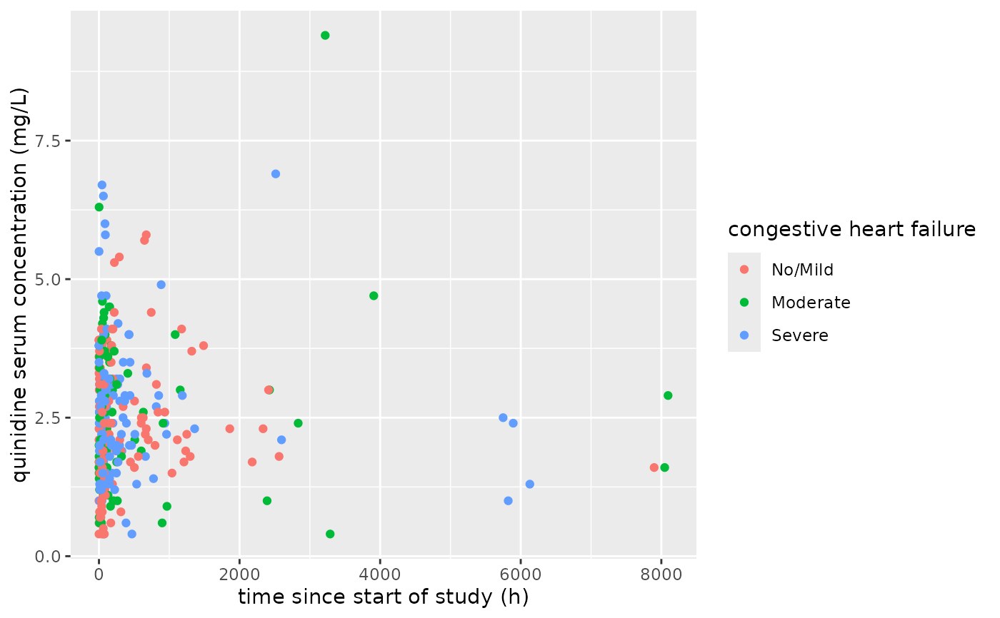

Places units attribute below label attribute.
Makes the most sense for figures (style = 'plotmath')
and useful for tables (style = 'latex') in combination
with alias. See also append_units.
Usage
sub_units(
x,
...,
open = if (style == "plain") "\n(" else "\\n(",
close = ")",
style = "latex",
math_open = "",
math_close = "",
label_open = "$\\begin{gathered}",
label_close = "\\end{gathered}$",
newline = "\\\\"
)Arguments
- x
object
- ...
passed to
append_units- open
character to precede units
- close
character to follow units
- style
one of 'plain', 'latex', or 'plotmath'
- math_open, math_close, label_open, label_close, newline
passed to
as_latex.sparif style = 'latex'
Value
see methods for append_units
Examples
library(units)
library(magrittr)
library(dplyr)
library(ggplot2)
x <- 1:10
attr(x, 'label') <- 'acceleration'
units(x) <- 'm/s^2'
y <- as_units('kg')
x %>% attr('label')
#> [1] "acceleration"
x %>% sub_units %>% attr('label')
#> [1] "$\\begin{gathered}\\textrm{acceleration}\\end{gathered}$\n$\\begin{gathered}\\textrm{(m/s}{}^{\\textrm{\\scriptsize 2}} \\textrm{)}\\end{gathered}$"
#> attr(,"class")
#> [1] "latex" "character"
x %>% sub_units(style = 'plotmath') %>% attr('label')
#> expression(atop(textstyle(), atop(textstyle("acceleration"),
#> atop(textstyle("(m/s"^{
#> "2"
#> } * ")")))))
x %>% sub_units(style = 'plain') %>% attr('label') %>% writeLines
#> acceleration
#> (m/s^2)
y %>% attr('label')
#> NULL
y %>% sub_units(style = 'plain') %>% attr('label')
#> [1] "\n(kg)"
x %>% sub_units(style = 'plotmath')
#> Units: [m/s^2]
#> [1] 1 2 3 4 5 6 7 8 9 10
#> attr(,"label")
#> expression(atop(textstyle(), atop(textstyle("acceleration"),
#> atop(textstyle("(m/s"^{
#> "2"
#> } * ")")))))
x %>% sub_units(style = 'latex')
#> Units: [m/s^2]
#> [1] 1 2 3 4 5 6 7 8 9 10
#> attr(,"label")
#> [1] "$\\begin{gathered}\\textrm{acceleration}\\end{gathered}$\n$\\begin{gathered}\\textrm{(m/s}{}^{\\textrm{\\scriptsize 2}} \\textrm{)}\\end{gathered}$"
#> attr(,"class")
#> [1] "latex" "character"
file <- system.file(package = 'yamlet', 'extdata','quinidine.csv')
file %>% decorate %>% resolve %>%
sub_units(style = 'plotmath') %>%
ggplot(data = ., aes(x = time, y = conc, color = Heart)) %>%
add(geom_point())
#> Warning: Removed 1110 rows containing missing values or values outside the scale range
#> (`geom_point()`).
